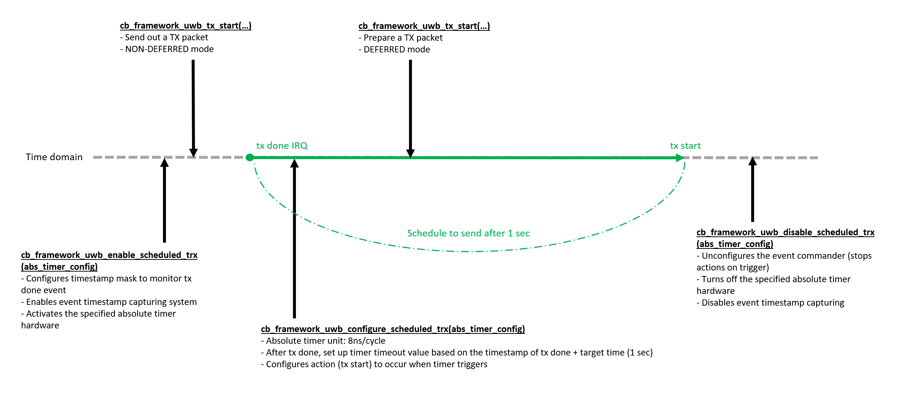
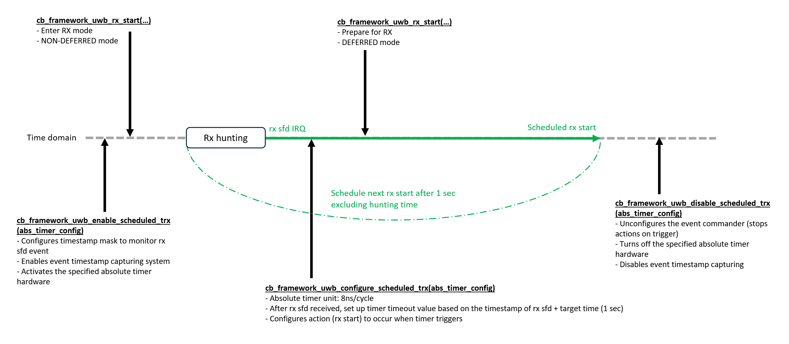

APP-AbsTimer
The following diagrams illustrate how the absolute timer is used to schedule periodic transmit and receive operations in the UWB Absolute Timer application.
Case A (TX to TX transitions)
{kind=link}
Case B (RX to RX transitions)
{kind=link}
概述
- 本文档提供了有关UWB绝对定时器功能的指南。此示例演示了如何使用UWB绝对定时器功能来安排定时的UWB收发操作，包括三种不同的实现案例：
案例A: TX到TX转换 - 定时的发射器操作
案例B: RX到RX转换 - 定时的接收器操作
案例C: TX->RX->TX循环 - 定时的发射和接收循环
要求
- 开发板：
CB5000V210 Anchor开发板
- 软件：
串行终端工具（例如PuTTY、SSCOM）
用户界面
在开发板上找到GPIO00引脚，并将其连接到串行接收线（RX）。
在开发板上找到GPIO01引脚，并将其连接到串行发送线（TX）。
确保连接牢固，以避免通信问题。
构建和运行
该示例可以在ChipsBank Connect SDK文件夹结构中的”Firmware\Examples\uwb_abstimer”找到。
功能说明
UWB绝对定时器示例包含以下三种案例：
- 案例A (TX到TX):
使用绝对定时器来安排周期性TX操作
每次TX完成后，定时器自动触发下一次TX
捕获TX完成事件，使用EN_UWBEVENT_28_TX_DONE
使用绝对定时器0进行计时
超时值设为1秒（可配置）
- 案例B (RX到RX):
使用绝对定时器进行连续RX操作
定时器在当前RX结束后安排下一个RX
捕获RX SFD检测事件，使用EN_UWBEVENT_17_RX0_SFD_DET
使用绝对定时器0进行计时
超时值设为1秒（可配置）
- 案例C (TX->RX->TX):
演示使用两个绝对定时器创建TX/RX循环
TX完成触发RX开始，RX完成触发下一个TX
- 使用两个事件捕获：
TX完成事件 (EN_UWBEVENT_28_TX_DONE) 通过定时器0触发RX
RX SFD检测 (EN_UWBEVENT_17_RX0_SFD_DET) 通过定时器1触发TX
每个定时器超时值设为1秒（可配置）
使用方法
- 用户可以通过更改源代码中的s_selected_case变量来选择要运行的案例。选择值可为：
DEF_UWB_ABSTIMER_CASE_A (1): TX到TX转换
DEF_UWB_ABSTIMER_CASE_B (2): RX到RX转换
DEF_UWB_ABSTIMER_CASE_C (3): TX->RX->TX循环
测试
- 连接开发板
准备合适的USB线，确保两端与您的计算机和开发板兼容。
将USB线的一端插入计算机的USB端口，另一端插入开发板的USB端口。
打开计算机上的设备管理器，检查是否识别到新的COM端口。
- 配置串行终端
在计算机上打开串行终端工具，例如PuTTY或SSCOM。
选择识别到的COM端口。
将波特率设置为115200，停止位设置为1，数据位顺序设置为LSB，奇偶校验设置为NONE。
点击连接按钮以建立与开发板的串行通信。
- 重置开发板
在开发板上找到复位按钮。
按下并释放复位按钮以重启开发板。
- 执行测试操作
重置后，观察串行终端工具中的输出。
- 根据所选的案例（A、B或C），程序会自动开始执行相应的UWB绝对定时器操作：
显示当前运行的案例（例如”UWB Absolute Timer Case A: TX->TX transitions”）
- 启动由绝对定时器调度和控制的UWB操作：
案例A：每1秒周期性TX操作
案例B：每1秒周期性RX操作
案例C：每1秒交替进行TX和RX操作
显示各种时间戳和事件信息
对于不同的案例，您将看到不同的操作模式和时间戳信息。
每个案例都会按照预定义的间隔（默认为1秒）重复执行其操作周期。
预期输出 - 案例A (TX到TX)
ABS TIMER v1.0
UWB Absolute Timer Case A: TX->TX transitions
> txStart - 4276ns
> txDone - 108156ns
> txStart - 1000108316ns
> txDone - 1000212196ns
> txStart - 2000212348ns
> txDone - 2000316228ns
...
预期输出 - 案例B (RX到RX)
ABS TIMER v1.0
UWB Absolute Timer Case B: RX->RX transitions
> rxTsu - 1800819119.852239ns
> rxTsu - 2800926030.267018ns
> rxTsu - 3801032968.338361ns
...
预期输出 - 案例C (TX->RX->TX)
ABS TIMER v1.0
UWB Absolute Timer Case C: TX->RX->TX cycle
> txStart - 419061748ns
> txDone - 419165628ns
TX -> RX transition
> rxTsu - 1419275168.446347ns
RX -> TX transition
> txStart - 2419275332ns
> txDone - 2419379212ns
TX -> RX transition
> rxTsu - 3419488953.297885ns
RX -> TX transition
...
Overview
- This document provides a guide to the UWB Absolute Timer functionality. The example demonstrates how to use UWB absolute timer functionality for scheduled UWB transactions with three different implementation cases:
Case A: TX to TX transitions - timed transmitter operations
Case B: RX to RX transitions - timed receiver operations
Case C: TX->RX->TX cycle - timed transmission and reception cycle
Requirements
- Development board:
CB5000V210 Anchor development board
- Software:
Serial terminal tool (e.g., PuTTY, SSCOM)
User interface
Locate the GPIO00 pin on the development board and connect it to the serial receive line (RX).
Locate the GPIO01 pin on the development board and connect it to the serial transmit line (TX).
Ensure the connections are secure to avoid communication issues.
Building and running
This sample can be found under “Firmware\Examples\uwb_abstimer” in the ChipsBank Connect SDK folder structure.
Functionality Description
The UWB Absolute Timer example contains the following three cases:
- Case A (TX to TX):
Uses absolute timer to schedule periodic TX operations
After each TX completes, timer automatically triggers next TX
Captures TX done event using EN_UWBEVENT_28_TX_DONE
Uses absolute timer 0 for timing
Timeout value is set to 1 second (configurable)
- Case B (RX to RX):
Uses absolute timer for continuous RX operations
Timer schedules next RX after current RX finishes
Captures RX SFD detection event using EN_UWBEVENT_17_RX0_SFD_DET
Uses absolute timer 0 for timing
Timeout value is set to 1 second (configurable)
- Case C (TX->RX->TX):
Demonstrates TX/RX cycle using two absolute timers
TX completion triggers RX start, RX completion triggers next TX
- Uses two event captures:
TX done event (EN_UWBEVENT_28_TX_DONE) for triggering RX through timer 0
RX SFD detection (EN_UWBEVENT_17_RX0_SFD_DET) for triggering TX through timer 1
Each timer timeout value is set to 1 second (configurable)
Usage
- Users can select which case to run by changing the s_selected_case variable in the source code. The selection values are:
DEF_UWB_ABSTIMER_CASE_A (1): TX to TX transitions
DEF_UWB_ABSTIMER_CASE_B (2): RX to RX transitions
DEF_UWB_ABSTIMER_CASE_C (3): TX->RX->TX cycle
Testing
- Connect the Development Board
Prepare a suitable USB cable, ensuring both ends are compatible with your computer and development board.
Insert one end of the USB cable into a USB port on your computer and the other end into the USB port on the development board.
Open the Device Manager on your computer to check if a new COM port has been recognized.
- Configure the Serial Terminal
Open a serial terminal tool on your computer, such as PuTTY or SSCOM.
Select the recognized COM port.
Set the baud rate to 115200, stop bits to 1, data bits order to LSB, and parity to NONE.
Click the connect button to establish serial communication with the development board.
- Reset the Development Board
Locate the reset button on the development board.
Press and release the reset button to restart the development board.
- Execute Test Operations
After resetting, observe the output in the serial terminal tool.
- Based on the selected case (A, B, or C), the program will automatically begin executing the corresponding UWB absolute timer operations:
Displaying the currently running case (e.g., “UWB Absolute Timer Case A: TX->TX transitions”)
- Starting the UWB operations that are scheduled and controlled by the absolute timer:
For Case A: Periodic TX operations every 1 second
For Case B: Periodic RX operations every 1 second
For Case C: Alternating TX and RX operations every 1 second
Showing various timestamps and event information
Depending on the selected case, you will see different modes of operation and timestamp information.
Each case will repeat its operation cycle at predefined intervals (default is 1 second).
Expected Output - Case A (TX to TX)
ABS TIMER v1.0
UWB Absolute Timer Case A: TX->TX transitions
> txStart - 42760ns
> txDone - 100156ns
> txStart - 1000108308ns
> txDone - 1000212188ns
> txStart - 2000212148ns
> txDone - 2000316228ns
...
Expected Output - Case B (RX to RX)
ABS TIMER v1.0
UWB Absolute Timer Case B: RX->RX transitions
> rxTsu - 1800819119.852239ns
> rxTsu - 2800926030.267018ns
> rxTsu - 3801032968.338361ns
...
Expected Output - Case C (TX->RX->TX)
ABS TIMER v1.0
UWB Absolute Timer Case C: TX->RX->TX cycle
> txStart - 419061748ns
> txDone - 419165628ns
TX -> RX transition
> rxTsu - 1419275168.446347ns
RX -> TX transition
> txStart - 2419275332ns
> txDone - 2419379212ns
TX -> RX transition
> rxTsu - 3419488953.297885ns
RX -> TX transition
...